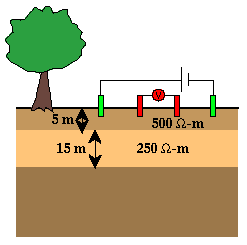
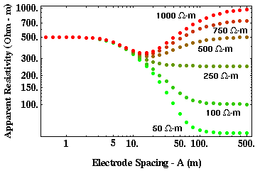

Apparent Resistivity Curves in Two-Layered Media
 In media consisting of more than a single layer over a halfspace, the potential response to resistivity soundings can be quite rich.
In these notes, we will only present two examples of apparent resistivity curves over two-layered media. Geophysicists specializing in the analaysis of resistivity soundings have classified the resistivity response over these structures into a number of type curves. For our purposes, showing the strengths and weaknesses of the resistivity method and developing an intuitive understanding of how resistivity readings can be interpreted is sufficient, and we do not need to explore all of the various type curves defined. Those interested in exploring the resistivity response over more complex media should consider following up these notes with a study of any of the many introductory geophysical texts now available.
Consider the structure shown above, which consists of two layers (the top one 5 meters thick with a resistivity of 500 ohm-m, the lower one 15 meters thick with a resistivity of 250 ohm-m) overlying a halfspace. A suite of resistivity curves, each generated assuming a different resistivity for the underlying halfspace, is shown below (resistivity next to each curve indicates the resistivity of the halfspace).

At small electrode spacings, all of the curves asymptotically approach the resistivity of the top layer. For this particular model, notice that if the resistivity of the halfspace is larger than the resistivity of the lower layer, the effects of all three media can be discerned in the apparent resistivity curve. As electrode spacing increases, resistivity at first decreases and then increases at larger electrode spacings. Eventually, at very large electrode spacings, the apparent resistivity approaches the resistivity of the halfspace. At the curve's lowest point, however, the apparent resistivity does not approach 250 ohm-m, the resistivity of the middle layer. It is still possible, though, to discern the presence of the three layers and qualitatively estimate their resistivities (i.e., the resistivity of the first layer is 500 ohm-m, the resistivity of the second layer is lower, the resistivity of the halfspace is equal to the value the apparent resistivity curve asmyptotically approaches at large electrode spacings).
As the resistivity of the halfspace decreases, however, the situation becomes more ambiguous. At small electrode spacings the apparent resistivity curves still approach the resistivity of the top layer. As electrode spacing increases, the apparent resistivity decreases monotonically, eventually approaching the resistivity of the halfspace. For these models, the apparent resistivity curves produced look much like those generated previously for single-layered models. Thus, the apparent resistivity curves generated by these two-layered structures can be virtually indistinguishable from those generated by one-layered structures.
Resistivity
- Current Flow and Ohm's Law pg 4
- The Fund. Electrical Property is Resistivity, NOT Resistance pg 5
- Resistivities for Common Earth Materialspg 6
- Current Density and Electric Fieldpg 7
- A First Estimate of Resistivitypg 8
- Current Flow From Two Closely Spaced Electrodespg 9
- A Practical Way of Measuring Resistivity pg 10
- Sources of Noise pg 11
- Depth of Current Penetration V.S. Current ElectrodeSpacing pg 12
- Current Flow in Layered Media pg 13
- Variation in Apparent Resistivity: Layered Versus Homogeneous Media pg 14
- Current Flow in Layered Media Versus Electrode Spacing pg 15
- A Second Example of Current Flow in Layered Mediapg 16